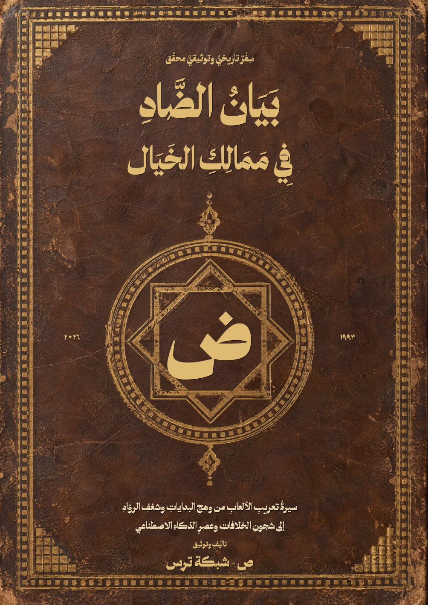

سِفْرٌ تاريخيٌّ وتوثيقيٌّ محقَّق
بَيَانُ الضَّادِفِي مَمَالِكِ الخَيَال
سيرةُ تعريبِ الألعابِ من وهجِ البداياتِ وشغفِ الروّادِ إلى شجونِ الخلافاتِ وعصرِ الذكاءِ الاصطناعي
ص - شبكة ترس
١٩٩٣ م — ١٢ نوفمبر ٢٠٢٦ م · الطبعة التوثيقية الموسَّعة
طبعةٌ قيدَ التحرير
كتابٌ حيٌّ ما زالَ يُكتَب
هذا السِّفرُ لم يُغلَقْ بعدُ، وما زالَ مِدادُه رطباً. نكتبُه على مرأىً من أهلِ الدارِ وشهودِ الحكاية، ونعلمُ أنَّ ذاكرةَ ثلاثةِ عقودٍ أوسعُ من أنْ يحيطَ بها قلمٌ واحد.
فإنْ وقعتَ فيه على خطأٍ في اسمٍ أو تاريخ، أو واقعةٍ غابتْ، أو فضلٍ نُسبَ إلى غيرِ أهلِه، فلا تطوِ الصفحةَ ساكتاً: افتحْ بلاغاً (Issue) أو قدِّمْ طلبَ دمجٍ (Pull Request) في مستودعِ الكتابِ على GitHub، لنتحاورَ فيه بالدليلِ ونُصلحَه معاً. فكلُّ تصويبٍ منك أمانةٌ تُردُّ إلى أهلِها، وسطرٌ جديدٌ يُضافُ إلى هذه السيرة.
github.com/DiNaSoR/arabic-game-localization-bookدليلُ القراءة
فهرس المحتويات
بطاقة الكتاب والضوابط المنهجية
- رسالة الوفاء والحياد: يفتتح هذا الكتاب أبوابه بفاتحة شكر وعرفان لجميع المعرِّبين العرب عبر أكثر من ثلاثة عقود (١٩٩٣ – ١٢ نوفمبر ٢٠٢٦)، ملتزماً بنقل القصة الكاملة لتعريب الألعاب وخلافاتها بحيادٍ تامٍّ دون انتصار لطرف على طرف.
- البناء السردي الواضح: يسير الكتاب في بابين مستقلين: الباب الأول لرواية قصة البناء والمنجزات أولاً بتسلسلها الزمني الطبيعي، يليه الباب الثاني لتشريح الخلافات والإشكالات في سياقها التاريخي حتى لا يضلَّ القارئ في تشابك الأحداث.
- الفصل الصارم بين الوقائع والادعاءات: تُسند كل معلومة إلى مرجعها المرقَّم [n] في الثبت الببليوغرافي المكوَّن من ١٣٩ مرجعاً، مع التمييز الصريح بين الوقائع الثابتة بالوثائق الأولية والادعاءات المنسوبة لأصحابها.
- دقة التوصيف: التزم الكتاب بتحرير طبيعة كل فاعل بدقة (التمييز بين الفرق الجماعية البشرية مثل «الحلم المتجدد» و«خارقو العادة» و«آفاق التعريب»، والصنّاع الأفراد في المنهج الهجين مثل عذبي @athbistudio مؤسس 2dq8 وAthbiStudio، والمطورين الأفراد العاملين بالذكاء الاصطناعي الكامل مثل هشام @Arabic_Hesham و«ص» @sbalhatlani الذي أعاد عام ٢٠٢٢ تأسيس «شبكة ترس» في طورها الحديث Ters.co بعد أن أسّس عذبي طورها القديم TersNetwork).
- العنوان
- بيان الضاد في ممالك الخيال
- تأليف وتوثيق
- ص - شبكة ترس
- الطبعة
- الطبعة التوثيقية الموسَّعة — محرَّرة حتى مساء ١٢ نوفمبر ٢٠٢٦
- القطع
- ١٧ × ٢٤ سم
- الخطوط
- IBM Plex Sans Arabic للمتن، وخط ثمانية للعناوين، وخط Milan Display للغلاف
- المستودع
- github.com/DiNaSoR/arabic-game-localization-book